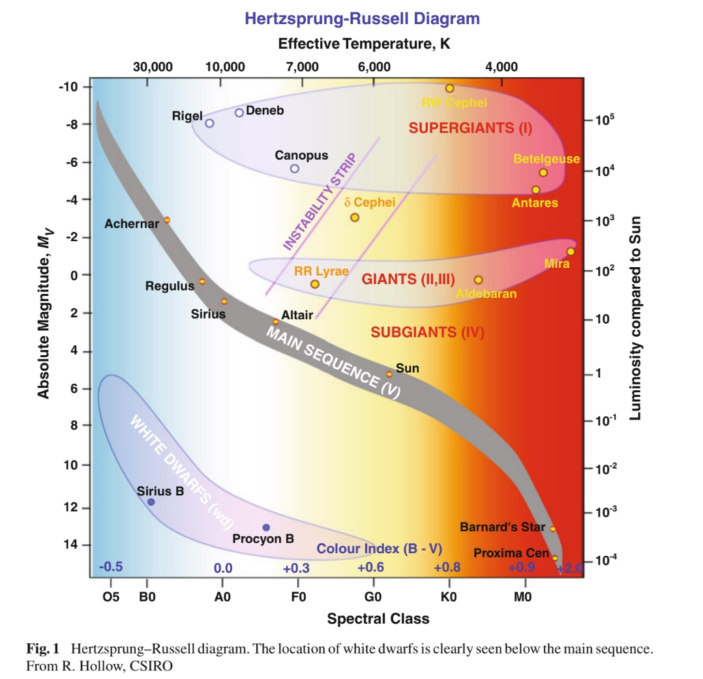
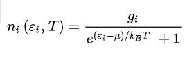
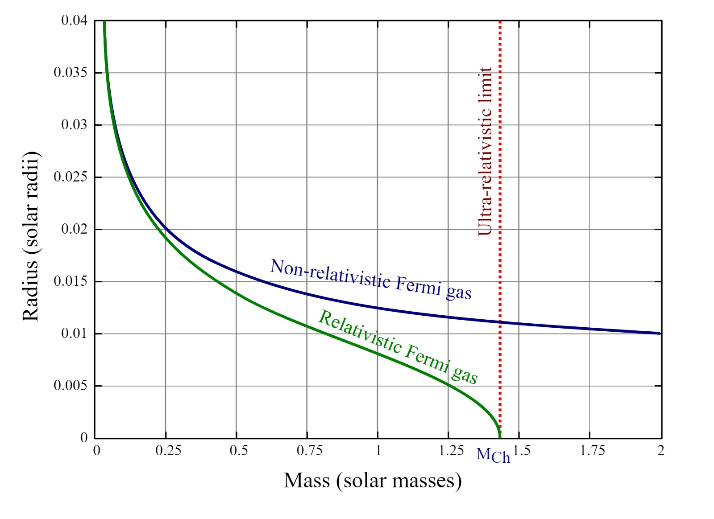
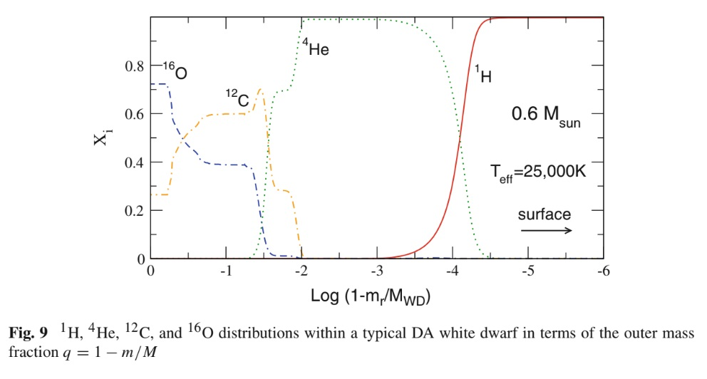
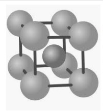

ENANAS BLANCAS por Francisco Plaza
«Aprendemos de las estrellas lo que interpretamos de la luz que nos envían. El mensaje que nos envió la compañera de Sirio decía: "Estoy compuesta de un material 3.000 veces más denso que cualquier cosa que hayáis visto; una tonelada de mi material tendría el tamaño de un pequeño lingote que podríais colocar en una caja de cerillas.” ¿Que se podría responder a este mensaje? La respuesta que la mayoría de nosotros dimos en 1914 fue: "Cállate. No digas tonterías".»
Arthur Eddington
INTRODUCCIÓN
Se estima que el ser humano habita la tierra desde hace 315 500 años. Pero fueron recién en los últimos 500 años, en los que se dedicó, especializo, y consiguió un conocimiento profundo y certero de la naturaleza.
Haciendo una analogía con una regla de medir, si la historia del hombre es una regla de 10 cm, el avance científico se logró en menos del último milímetro.
Es realmente increíble, lo que, a pesar de nuestras limitadas capacidades, y engañosos sentidos, hemos logrado como humanidad.
Como decía Edwin Hubble:
«Equipado con sus cinco sentidos, el hombre explora el universo que lo rodea y a sus aventuras las llama ciencia».
«La ciencia es el padre del conocimiento, pero las opiniones son las que engendran la ignorancia».
Hipócrates
Esto lo logramos gracias al desarrollo del método científico, el cual, es un método de acceso a un conocimiento certero, cuyos pilares fundamentales son la teoría y el empirismo.
Conforme avanzo el conocimiento científico, llegamos a teorías que exceden totalmente a la experiencia, y fenómenos solo presentes en condiciones extremas totalmente ajenas a nuestras condiciones de vida. Por lo que este trabajo es una demostración de cómo una vez más el ser humano fue capaz de describir leyes físicas incluso en condiciones totalmente ajenas y anti intuitivas.
Sin irme demasiado de tema, me parece importante reflexionar sobre estas cuestiones para tener una perspectiva de lo que logramos, y de lo mucho que podremos lograr. De lo importante que es tener una formación tanto científica como filosófica, disfrutando de esta hermosa profesión, en simultaneo con la responsabilidad que amerita.
Este trabajo intentara reflejar una ínfima parte del conocimiento que alcanzo el ser humano de la evolución estelar, en particularmente de una estrella tipo sol, más en concreto el final de la “vida” de una estrella como esta, Una enana blanca.
Las Enanas Blancas son la etapa final de la evolución de la mayoría de las estrellas, incluido nuestro sol. Son objetos estables, en enfriamiento, es decir las más frías, son objetos muy viejos y aportan información importante al desarrollo de la evolución estelar.
Su estudio tiene aplicaciones en distintos campos de la astronomía, en especial en la astrofísica.
En particular, las enanas blancas son en sí mismas un reloj independiente confiable en el universo. Además, constituyen un laboratorio excepcional, con condiciones de densidades y temperaturas inalcanzables en laboratorios terrestres, por lo que constituyen un escenario interesantísimo para contrastar teorías físicas en condiciones extremas. Por ejemplo pueden usarse para restringir propiedades fundamentales de partículas elementales como axiones y neutrinos, y para el estudio de variación de constantes fundamentales.
Además, es interesante el estudio de etapas de inestabilidad de enanas blancas, las cuales producen pulsaciones, las cuales son ideales para el estudio y contrastación de teorías de composición de las mismas, grosor de su envoltura, y estudio de su estructura interna, que de otro modo, permanecería oculta al observador. Esto permitirá medir masas con una precisión envidiable.
Sabemos actualmente que la evolución de una estrella depende, en groso modo, exclusivamente de su masa inicial en ZAMS.
Si la estrella en dicho inicio, tiene una masa menor a 10 masas solares aproximadamente, con un error de más o menos 2 masas solares, teniendo en cuenta que pueden afectar cuestiones como rotación estelar, metalicidad etcétera, en general, terminaran como una enana blanca.
La evolución de una estrella de 10 +/-2 masas solares en forma resumida es la siguiente:
EVOLUCIÓN ESTELAR (M<10 Msol)
Todo empieza con una nube de gas frío, el cual entra en una fase de contracción por su misma interacción gravitacional.
Este gas se contraerá si está lo suficientemente frío como para que la gravedad le gane a la presión térmica. Posteriormente, si la protoestrella tiene suficiente masa, esta se contraerá hasta que su núcleo alcanzara una temperatura lo suficientemente alta para que en este se produzcan reacciones nucleares que convertirán átomos de hidrógeno en átomos de helio. La estrella habrá iniciado la secuencia principal.
FASE DE SUBGIGANTE
Cuando una estrella de menos de 10 +/-2 masas solares agota el hidrógeno en su núcleo, empieza a quemarlo en una cáscara alrededor de este. Como resultado, la estrella se hincha y su superficie se enfría, por lo que se mueve hacia la derecha en el diagrama Hertzsprung-Russell sin variar mucho su luminosidad. Esta fase es la de SUB GIGANTE y es un estado intermedio entre la secuencia principal y la fase de gigante roja.
FASE DE GIGANTE ROJA
Al evolucionar una subgigante hacia la derecha (temperaturas más bajas) en el diagrama de Hertzsprung-Russell, en un momento dado la atmósfera de la estrella alcanza un valor crítico de la temperatura que hace que la luminosidad aumente espectacularmente mientras que la estrella se hincha hasta alcanzar un radio cercano a los 100 millones de km (unos 142 R solares): la estrella se ha convertido así en una GIGANTE ROJA. Se estima que dentro de unos 5 o 6 mil millones de años el sol llegará a esta condición y devorará a Mercurio, a Venus y quizás a la Tierra.
Al igual que una subgigante, una gigante roja deriva su energía de quemar hidrógeno en helio en una cáscara alrededor de su núcleo inerte de helio. La fase de gigante roja termina cuando dicho helio se enciende en el fenómeno conocido como Flash de Helio, mediante el proceso triple.alfa. El flash de helio se da cuando, debido a las reacciones nucleare en capas, el núcleo inerte de helio, aumenta tanto su temperatura que este se ioniza completamente, volviéndose un gas completamente degenerado. En este punto entra en juego una presión extra que no depende de la temperatura, la presión de degeneración electrónica. Por lo que el núcleo sube de temperatura descontroladamente, hasta que es posible la quema de Helio en él.
FASE DE LA RAMA HORIZONTAL
Al encenderse el helio en el núcleo, la luminosidad de la estrella desciende ligeramente y su tamaño disminuye. Para estrellas de metalicidad solar, la temperatura superficial no varía mucho con respecto a la fase de gigante roja y esta fase recibe el nombre de APELOTONAMIENTO ROJO pues las estrellas de masas similares aparecen agrupadas alrededor de un punto del diagrama Hertzsprung-Russell. Para estrellas de menor metalicidad, la temperatura superficial aumenta y esta fase recibe el nombre de RAMA HORIZONTAL, pues las estrellas de masas similares aparecen distribuidas a lo largo de una línea de temperatura variable y luminosidad constante en dicho diagrama.
|
|
|
|
El proceso de quemado o fusión del helio se lleva a cabo por un conjunto de reacciones que reciben el nombre de triple.alfa porque consiste en la transformación de tres núcleos de helio-4 en uno de carbono-12. A estas alturas el núcleo ha incrementado su densidad y su temperatura hasta llegar a los 100 millones de K (108 K).
FASE DE LA RAMA ASINTOTICA DE LAS GIGANTES
Llegado el momento, el helio del núcleo de la estrella se agota de la misma manera que antes se agotó el hidrógeno al final de la secuencia principal. La estrella pasa entonces a quemar el helio en capa y la estrella vuelve a escalar el diagrama Hertzsprung-Russell mientras su temperatura superficial se reduce y la estrella se vuelve a hinchar. Como la trayectoria seguida se asemeja a la que hizo antes en la fase de gigante roja, esta fase se conoce como la RAMA ASINTOTICA DE LAS GIGANTES. La estrella acabará hinchándose hasta un tamaño de aproximadamente el doble del que consiguió en la fase de gigante roja.
En esta fase la estrella alcanza la mayor luminosidad que jamás conseguirá, ya que al terminarla se quedará sin combustible nuclear. En ella se producen el segundo y el tercer dragados, en los que material reprocesado nuclearmente aflora en la superficie. Así mismo, al final de esta fase la estrella puede conseguir reactivar el quemado de hidrógeno en una capa relativamente externa de la estrella. La posibilidad de quemar dos especies distintas (hidrógeno y helio) en dos regiones de la estrella inducirá una inestabilidad que dará lugar a pulsos térmicos, los cuales causarán un fuerte aumento en la pérdida de masa de la estrella. Así, la estrella acabará expulsando sus capas exteriores en forma de nebulosa planetaria ionizada por el núcleo de la estrella, el cual acabará por convertirse en una enana blanca.
Definimos entonces una Enana blanca como un remanente estelar, producto del final de la evolución del 95% de las estrellas visibles en el cielo, cuya masa inicial en zams es de aproximadamente menor o igual a 10 masas solares.

UN POCO DE HISTORIA
La primera enana blanca se descubrió en el sistema estelar triple 40 Eridani, que está comprendido por la estrella de secuencia principal 40 Eridani A orbitando alrededor del sistema binario formado por la enana blanca 40 Eridani B, y 40 Eridani C, una enana roja de secuencia principal. Dicho sistema binario fue descubierto por William Herschel el 31 de enero de 1783.
Durante el siglo XIX, las técnicas de medir la posición de las estrellas se volvieron lo suficientemente precisas como para poder detectar cambios muy pequeños en la posición de algunas de ellas. Friedrich Bessel, en 1844, utilizando estas técnicas percibió que las estrellas Sirio (α Canis Majoris) y Procyon (α Canis Minoris) estaban variando sus posiciones, por lo que dedujo que estos cambios de posición eran debidos a una estrella invisible hasta entonces. La estrella mencionada no es otra que Sirio B, la segunda enana blanca descubierta. Tiene una temperatura superficial de unos 25.000 K pero resultó ser 10.000 veces menos luminosa que la estrella principal Sirio A.
Las enanas blancas eran un tipo de estrellas introducidas en ese momento para que estas estrellas extrañas encajen, pero eran extrañas y se buscaban buenas explicaciones para las mismas.
Estas estrellas, presentaban líneas características que por la mecánica estadística se les asignaba una temperatura efectiva correspondiente. Pero a su vez presentaban líneas con grandes ensanchamientos, lo que hablaba de una gran gravedad superficial, y al mismo tiempo su luminosidad era mucho más baja que la esperada para una estrella de secuencia principal a esa Temperatura efectiva, todo esto se ve reflejado en su característica posición en el diagrama HR.
Se introduce así la hipótesis de una estrella enana.
A posteriori, se modela una estructura interna degenerada, y se aplica a ella también la relatividad especial para el límite de Chandrasekhar, y se aplica la relatividad general, para modelar el efecto Doppler gravitacional, como explicaremos más en detalle posteriormente en este trabajo.
Constituyendo así las enanas blancas, una de las primeras contrastaciones, tanto de la mecánica cuántica, más precisamente del principio de exclusión de Pauli, ya que no había otro modo de explicar estas estrellas sin este fenómeno, como así también la relatividad general.
Los cálculos determinaron un radio aproximadamente igual al de la Tierra. El análisis de la órbita del sistema estelar Sirio mostró que la masa de aquella extraña estrella era aproximadamente la misma que la del Sol. Esto implicaba que Sirio B debía de ser cientos de veces más densa que el plomo, algo que no se podía explicar hidrostáticame.

Imagen del sistema binario Sirio, donde se ven a Sirio A, una estrella de sec. principal, con su compañera, Sirio B, una enana blanca.
FÍSICA DETRÁS DE LAS ENANAS BLANCAS
INTERIOR
Distribución Fermi-Dirac: Para no hacer muy extenso este trabajo, no entraremos en detalle, y supondremos que se tiene conocimiento previo de bajo qué condiciones se puede y debe aplicar esta distribución de la mecánica estadística cuántica. Simplemente diremos que es la que describe la distribución de fermiones entre los distintos niveles cuantizados de energía, a una temperatura dada. Los números de ocupación de los niveles dada por esta distribución están dados por la siguiente expresión:

La cual, para un gas ideal a temperatura 0k tiene la forma de una función heaviside.
Las enanas blancas están compuestas por átomos totalmente ionizados, es decir materia en estado de plasma; ya que como en su núcleo ya no se producen reacciones termonucleares, la estrella no tiene ninguna fuente de energía que equilibre el colapso gravitatorio, por lo que la enana blanca se va comprimiendo sobre sí misma debido al potencial gravitatorio. La distancia entre los átomos en el seno de la misma disminuye radicalmente, la temperatura aumenta en forma descontrolada, produciendo la total ionización de sus átomos, los cuales son el producto de la última fusión nuclear que fue posible en el núcleo estelar.
Este gas, totalmente ionizado, es lo que se suele llamar, materia degenerada.
Al ser átomos de carbono y oxígeno en la mayoría de los casos de estrellas de estas masas, lo que uno obtiene en la degeneración, es un núcleo, por cada 8 electrones en el caso del oxígeno, y 6 en el caso del carbono, por lo que los núcleos, al ser por mucho minoría, son despreciados en los modelos o simulaciones más simples. Modelando así, simplemente el núcleo como un gas de fermiones degenerado a Temperatura 0°k, siendo esta una aceptable aproximación
Llegado a este punto, el colapso gravitacional continúa. La distancia entre electrones disminuye estos tienen menos espacio para moverse (en otras palabras, la densidad aumenta mucho, hasta órdenes de 106 g/cm3, una tonelada por centímetro cúbico y aún más). A estas densidades entran en juego el principio de indeterminación de Heisenberg y el principio de exclusión de Pauli para los electrones, los cuales se ven obligados a moverse a muy altas velocidades, ya que al incrementar la determinación en su posición, incrementa la incerteza en su momento, en conjunto con el principio de exclusión de Pauli, que es la imposibilidad de existencia de 2 electrones en el mismo estado cuántico, por lo que se genera la llamada presión de degeneración electrónica, que es la que efectivamente se opone al colapso de la estrella. Esta presión de degeneración electrónica es un fenómeno radicalmente diferente de la presión térmica, que es la que generalmente mantiene a las «estrellas normales». Las densidades mencionadas son tan enormes que una masa similar a la del Sol cabría en un volumen como el de la Tierra (lo que daría una densidad aproximada de 2 tn/cm3), y solamente son superadas por las densidades de las estrellas de neutrones y de los agujeros negros. Las enanas blancas emiten solamente energía térmica almacenada y tienen radios muy pequeños, por ello tienen luminosidades muy débiles.
Como hemos mencionado, el interior de la enana blanca esta totalmente degenerado, por lo que para estudiar las propiedades de la EB se aplica en sus modelos la mecánica estadística cuántica.
Se modela el interior como un gas de fermiones, en este caso electrones, con 2 estados de degeneración (sus 2 orientaciones de spin), a Temperatura cero, como una simplificación valida, ya que esto solo variaría en que, al incrementar la temperatura, abría una minoría de electrones en niveles superior a la energía de Fermi, sin grandes repercusiones. Mas en concreto, la energía de Fermi, depende de la densidad, y como las enanas blancas son objetos sumamente densos, el sistema del interior tendrá una energía de Fermi muy alta. Así entonces, aunque el interior, que por la alta temperatura de la enana tiene electrones, moviéndose incluso a velocidades relativistas, estos están incluso por debajo de la energía de Fermi de su sistema. Se aplica entonces, distribución Fermi Dirac relativista a T=0k siendo esta una muy buena aproximación.
La Distribución entonces, será de niveles llenos, ocupándose desde el nivel más bajo de energía, hasta el nivel de la Energía de Fermi, Con 0 electrones para niveles cuantizados superiores a la energía de Fermi.
En modelos mejorados, se tienen en cuenta también los núcleos, manteniendo cierta simpleza, se consideran los potenciales inducidos por los nucleos presentes, y se considera a los mismos en reposo, distribuidos en forma equidistante por el núcleo estelar.
Es importante aclarar también, que estos modelos simplificados, consideraban un gas de electrones ideal, es decir, solo interactuaban por colisiones.
No podíamos no mencionar el impresionante trabajo que realizo Subrahmanyan Chandrasekhar, quien con solo 19 años, le basto la duración de su viaje desde la India a Inglaterra, para modelar una enana blanca, teniendo en cuenta efectos relativistas, y cuánticos para calcular el famoso límite de Chandrasekhar.
Lo que hizo fue tener en cuenta que, en un análisis clásico, los electrones durante la compresión, para no violar el principio de incerteza de Heisenberg, podrían aumentar su velocidad indefinidamente. Sin embargo, hoy sabemos que esto es imposible, por el principio de relatividad. Por lo que los electrones, podrían hacer esto, hasta aproximarse a la velocidad de la luz. Por lo tanto, no solo hay que tener en cuenta hasta qué punto la presión de degeneración soporta el colapso gravitacional debido a la masa de la estrella enana, sino también este límite en la velocidad de los electrones.
Teniendo en cuenta esto, Chandrasekhar llego a la conclusión que una estrella enana blanca a lo sumo tendrá una masa de 1.44 masas solares, existiendo hasta ese límite un equilibrio entre la presión térmica y de degeneración, y el colapso gravitacional.

Curvas de relacion Radio-masa para una enana blanca. En azul para un modelo no relativista, y en verde para un modelo relativista.
ATMÓSFERA
Aunque la mayoría de las enanas blancas están compuestas por oxígeno y carbono, la espectroscopia de la luz emitida revela que su atmósfera está compuesta casi en su totalidad o bien de hidrógeno, o bien de helio, y este elemento dominante es unas 1.000 veces más abundante en la atmósfera que los demás. La explicación de este hecho la proporcionó Evry Schatzman en la década de 1940, quien expuso que la alta gravedad superficial separaba los elementos, atrayendo más fuertemente los elementos pesados hacia su centro, quedando los más ligeros en la superficie.
La atmósfera, la única parte de las enanas blancas que podemos observar, es la parte superior de un residuo de la fase de la rama asintotica de las gigantes. Es la ultima capa que queda al descubierto luego de que llegado un periodo de inestabilidad de la gigante, esta expulsa sus capas mas externas.
Se ha calculado que una atmósfera rica en helio posee una masa aproximada del 1% de la masa total de la estrella, y una atmósfera compuesta de hidrógeno, el 0,01% del total.
A pesar de la fracción que representa, esta capa externa determina la evolución térmica de la enana blanca; los electrones degenerados conducen bien el calor, por lo que la masa de la enana blanca es casi isotérmica: una temperatura superficial entre 8.000 K y 16.000 K corresponde con una temperatura del núcleo entre 5.000.000 K y 20.000.000 K. La opacidad a la radiación de las capas externas es una medida de las enanas blancas que permite que se enfríen con mayor lentitud.

CLASIFICACIÓN ESPECTRAL
El sistema que se adopta actualmente clasifica el espectro, con sus líneas en el rango visible, con un símbolo, que suele consistir en una D inicial, seguido de una secuencia de letras mostradas en la tabla adyacente, y un índice de temperaturas, que se calcula dividiendo 50.400 K por la temperatura efectiva, ya que la temperatura superficial está íntimamente relacionada con el espectro. Por ejemplo:
- Una enana blanca que solo posea líneas de absorción del He I y una temperatura efectiva de 15.000 K, corresponderá, según la notación, con DB3.
- Una enana blanca que posea un campo magnético polarizado, una temperatura efectiva de 17.000 K, y una línea de absorción en la que domina el He I pero que también tiene H, se tratará de una DBAP3.
Si la clasificación no está del todo clara, se pueden utilizar ciertos símbolos, como "?" o ":"
| CARACTERISTICAS PRINCIPALES | CARACTERISTICAS SECUNDARIAS | ||
| A | Líneas de H. No hay líneas de metales o de He I | P | Enana blanca magnética con polarización detectable |
| B | Líneas de He I. No hay líneas de metales o de H | H | Enana blanca magnética sin polarización detectable |
| C | Espectro continuo. No hay líneas | E | Líneas de emisión |
| O | Líneas de He II, acompañadas por líneas de H o de He I | ||
| Z | Líneas de metales. No hay líneas de H o de He I | ||
| Q | Líneas del carbono | ||
| X | Espectro inclasificable | ||
Las enanas blancas del tipo DA, que se caracterizan por tener atmósferas ricas en hidrógeno, conforman el 80% de las enanas blancas analizadas espectroscópicamente. La gran mayoría de los restantes tipos (DB, DC, DO, DZ) poseen atmósferas ricas en helio. Solo una pequeña fracción de las enanas blancas, aproximadamente el 0,1%, tienen atmósferas en las que el elemento principal es el carbono (tipo DQ). Suponiendo que no hubiera carbono ni metales, el tipo espectral depende exclusivamente de la temperatura efectiva. Aproximadamente entre 45.000 K y 100.000 K el espectro más abundante sería el DO, caracterizado por helio ionizado. Entre 12.000 K y 30.000 K, destacarían las líneas de helio, y se clasificaría como DB. Por debajo de los 12.000 K, el espectro es continuo y se clasifica como DC. No está claro el motivo por el cual escasean las enanas blancas DB, con temperaturas efectivas entre 30.000 K y 45.000 K. Una hipótesis sugiere que se debe a procesos de evolución atmosféricos, como la separación gravitacional y la mezcla convectiva.
No voy a insertar imagenes de espectros, ya que hay en existencia otra monografia que muestra espectros de enanas blancas de todo tipo: Enanas Blancas
ENANAS VARIABLES
El estudio de etapas de inestabilidad de enanas blancas, es un momento ideal para contrastar modelos de estructura interna de estos objetos. Los modos de pulsación de las mismas tienen una relación directa con su estructura interna y composición. Al ser objetos de altísima densidad, y compuesta por fermiones, cuyos niveles de los más bajos de energía a los más elevados están completamente llenos y no admiten más electrones, tiene una estructura realmente compacta y estable, por lo que la variación en el radio de enanas blancas pulsantes es mínimo, y un modelo de pequeñas oscilaciones, es una buena aproximación. Podemos afirmar entonces que la variación en la luminosidad de estas es consecuencia exclusivamente de variación en opacidad producto de cambios en la temperatura, y no tanto de variación de radio, como en estrellas variables comunes. La máxima variación en magnitud es del orden de los 0.05. El estudio de estas variaciones es útil, no solo para inferir en cualidades globales, como la gravedad superficial, temperatura efectiva, masa estelar; estas además permiten la contrastación de teorías de composición de las mismas, grosor de su envoltura, y estudio de su estructura interna, que de otro modo, permanecería oculta al observador. Esto permitirá medir masas con una precisión envidiable. Permite también sondear también la estratificación química central, detectar tasas de rotación y perfil de rotación interna, determinación de las zonas convectivas, velocidad del sonido en el medio local y presencia y fuerza de campos magnéticos.
Es importante destacar que el principal observable de la astrosismología, las frecuencias de oscilación, son las cantidades que se puede medir con mayor precisión para una estrella.
ENFRIAMIENTO
La radiación de una enana blanca proviene de la energía térmica almacenada, a no ser que acrete masa de una compañera o de cualquier otra fuente. Al tener una superficie tan reducida, el calor irradia muy lentamente, por lo que se mantienen calientes durante un largo período. A medida que una enana blanca se enfría, la temperatura superficial desciende, el espectro de la radiación se va desplazando hacia un color rojizo, y la luminosidad disminuye, y al no tener otro tipo de sumidero de energía que la radiación, se deduce que con el tiempo se va enfriando más lentamente. Por ejemplo, Bergeron, Ruiz, y Leggett, estimaron que una enana blanca de carbono de 0,59 masas solares con una atmósfera de hidrógeno se había enfriado hasta una temperatura superficial de 7.140 K en, aproximadamente, 1,5 mil millones de años. Sin embargo, calcularon que para que se enfriara aproximadamente 500K más (hasta 6.590 K), necesitaría 0,3 mil millones de años, pero si repetimos dos veces más el proceso (hasta 6.030 K y 5.550 K), tardaría 0,4 y 1,1 miles de millones de años respectivamente. La mayoría de las enanas blancas observadas poseen una temperatura superficial relativamente elevada, entre 8.000 K y 40.000 K. Como cada vez se enfrían más lentamente, pasan la mayor parte de su vida en temperaturas frías, por lo que, al observar el Universo, lo lógico sería que encontráramos más enanas blancas frías que calientes. Esto parece que se cumple, pero esta tendencia se frena al llegar a temperaturas extremadamente frías. Sólo han sido observadas unas pocas enanas blancas por debajo de los 4.000 K, y una de las más frías observadas es WD 0346+246, con una temperatura superficial aproximada de 3.900 K. Esto tiene su explicación en que la edad del universo es finita, y no les ha dado tiempo a enfriarse por debajo de dichas temperaturas. Una consecuencia práctica de esto es que la función de luminosidad de las enanas blancas puede ser utilizada para calcular la edad de las estrellas en una determinada región del espacio.
Con el tiempo, las enanas blancas se enfriarán hasta tal punto que dejarán de irradiar y se convertirán en enanas negras, aproximándose a la temperatura del entorno e igualándose con la radiación de fondo de microondas. Sin embargo, en la actualidad, y debido a la corta edad del universo, no hay indicios de la existencia de enanas negras.
CRISTALIZACIÓN
La presión de degeneración es un fenómeno cuántico independiente de la temperatura, por lo que las enanas blancas seguirán enfriándose toda su vida hasta igualar su temperatura con el entorno, es decir, hasta llegar casi al cero absoluto.
El material que compone las enanas blancas es inicialmente plasma, pero en la década de los 60 se predijo teóricamente que en una fase avanzada del enfriamiento, la enana blanca debería cristalizar, comenzando por el centro de la estrella.
Si se enfrían lo suficiente las interacciones entre iones se tornan relevantes y estos dejan de comportarse como un gas ideal pasando a ser un liquido de Coulomb. Pero por debajo de una cierta temperatura umbral (~ 1,7x107 K) los iones se disponen en forma de red cristalina de tipo bcc, por lo que se dice que la enana blanca ha cristalizado. Al cristalizar se libera calor latente que es un proceso de cambio de fase y eso afecta a la función de luminosidad. Esta transición de fase libera esa energía latente ralentizando un poco el enfriamiento.

Estructura de un enlace ionico tipo BCC
Mientras la energía coulombiana sea inferior a la térmica el comportamiento de los iones será de gas. Cuando sus valores sean comparables se comportará como un líquido y cuando la energía coulombiana sea claramente dominante la estrella tendrá un comportamiento sólido, un sólido de una dureza inimaginable a escala humana.
Ocurre que el oxígeno cristaliza antes que el carbono por lo que en la enana blanca empezará a diferenciarse un núcleo de oxígeno cristalizado rodeado por un fluido de carbono cada vez más empobrecido en oxígeno. La emisión de radiación latente contribuirá a frenar el enfriamiento y alargar la vida de las enanas blancas unas decenas de millones de años.
Otra consecuencia de este curioso fenómeno es que en las enanas blancas cristalizadas el potencial a romper para que se dé la fusión completa del carbono es mayor por lo que son potencialmente más explosivas en caso de tener una compañera cercana.
En el año 2004, Travis Matcalfe y un equipo de investigadores del Harvard Smithsonian Center for Atrophysics estimaron, sobre la base de sus observaciones, que aproximadamente un 90% de la masa de la enana blanca BPM 37093 había cristalizado.
Trabajos independientes estiman que la masa cristalizada se sitúa entre el 32% y el 82% del total.
PERDIDAS DE NEUTRINOS
Si bien a lo largo del trabajo se hablo de que la forma de enfriarse y perder energía de las enanas blancas era por su radiación, otra forma no despreciable de perdida de energía es a través de neutrinos, que sabemos, son partículas que escapan fácilmente, prácticamente sin interactuar con la materia constituyente de la estrella.
Esto es algo a tener en cuenta en modelos mas precisos de enanas blancas, tanto para modelar su enfriamiento, cristalizacion, tiempos de etapas, etc.
Estos neutrinos son el resultado de procesos leptónicos puros como consecuencia de la interacción electro-débil. En las condiciones que prevalecen en las enanas blancas calientes, el proceso de plasma-neutrino suele ser dominante, pero para las enanas blancas masivas el neutrino Bremsstrahlung también debe tenerse en cuenta
REFERENCIAS
- Evolutionary and pulsational properties of white dwarf stars – Leandro G. Althaus, Alejandro Corisco, Jordi Isern, Enrique Garcia.
- Física estadística y modelos estelares - Paloma López Reyes Universidad Complutense de Madrid
- Physics of white dwarf stars - D Koester and G Chanmugam 1990
- Nature of blackbody stars - Aldo Serenelli, René D. Rohrmann and Masataka Fukugita
- Pulsating White Dwarf Stars and Precision Asteroseismology - D.E. Winget and S.O. Kepler